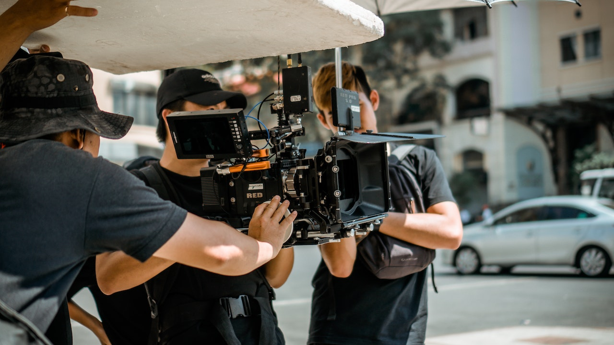
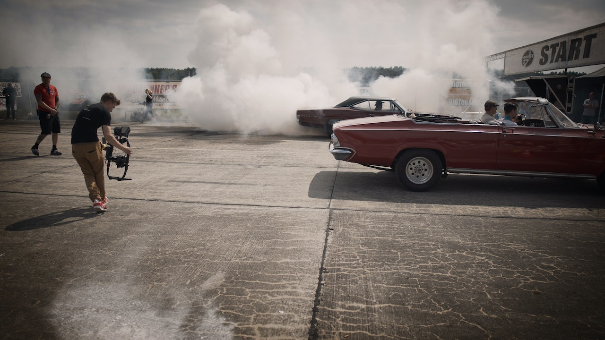
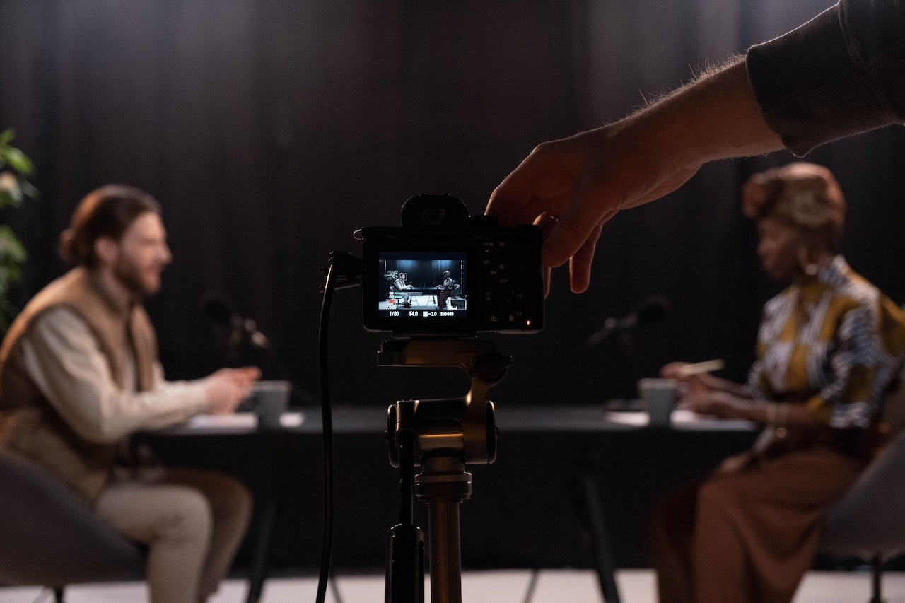

AudioVisual
La sección "AudiovisualATF" es el epicentro de la creatividad visual y auditiva. Aquí, fusionamos la magia del sonido y la imagen para crear experiencias audiovisuales excepcionales. Desde la producción de videos musicales cautivadores hasta la grabación de eventos corporativos que cuentan historias impactantes, nuestro enfoque en la excelencia técnica y artística se traduce en una calidad inigualable. Nuestro equipo altamente capacitado y equipado con tecnología de vanguardia trabaja incansablemente para capturar momentos, emociones y narrativas que resuenen con tu audiencia. En AudiovisualATF, transformamos tus ideas en realidad visual, haciendo que cada proyecto sea una obra maestra única. Bienvenido al mundo de las imágenes y los sonidos que te transportarán y te emocionarán.
Diferentes formas de contactarnos:
Llamanos
7938-7134
Escribenos
ATFgmail.com
Ubicación
3a Calle Poniente, Lourdes
Instrumentos cenrtificados TAMA:
Distribuidor Autorizado
Graba tus videos musicales
¿Sueñas con dar vida a tus composiciones musicales a través de videos musicales cautivadores y únicos? Nuestro servicio de grabación de videos musicales está diseñado para convertir tu visión creativa en realidad. Desde la planificación y conceptualización hasta la grabación y la postproducción, nuestro talentoso equipo trabaja en estrecha colaboración contigo para capturar la esencia de tu música y plasmarla en imágenes inolvidables. Ya sea que desees un enfoque narrativo, una estética visual sorprendente o un enfoque artístico, estamos comprometidos a superar tus expectativas y brindarte un producto final que eleve tus canciones a nuevas alturas.
cotización depende del evento
Graba tus eventos coorporativos:
Los eventos corporativos son ocasiones valiosas para comunicar tu mensaje, conectar con tu audiencia y alcanzar tus objetivos empresariales. Nuestro servicio de grabación de eventos corporativos te permite preservar y compartir estos momentos cruciales. Desde conferencias y simposios hasta presentaciones de productos y ceremonias de premiación, capturamos cada detalle con atención meticulosa. Nuestro equipo de profesionales de la videografía trabaja de manera discreta para garantizar que no se pierda ningún aspecto importante. La postproducción se realiza con precisión para que puedas compartir tus eventos con empleados, socios y clientes de todo el mundo, aprovechando al máximo su impacto y valor.
cotización depende del evento
Graba tus podcast:
Los podcasts se han convertido en una plataforma influyente para compartir ideas, historias y conversaciones con una audiencia global. Nuestro servicio de grabación de podcasts te ofrece las herramientas y la experiencia necesarias para producir contenido de alta calidad y conectarte con tu audiencia de manera significativa. Ya sea que prefieras un entorno de estudio profesional o la versatilidad de la grabación remota, estamos listos para adaptarnos a tus necesidades. Desde la grabación y la edición hasta la producción y la distribución, te acompañamos en cada paso del proceso para garantizar que tu mensaje se escuche con claridad y llegue a un público comprometido. Deja que tus ideas tomen vida a través de nuestros servicios de grabación de podcasts.
